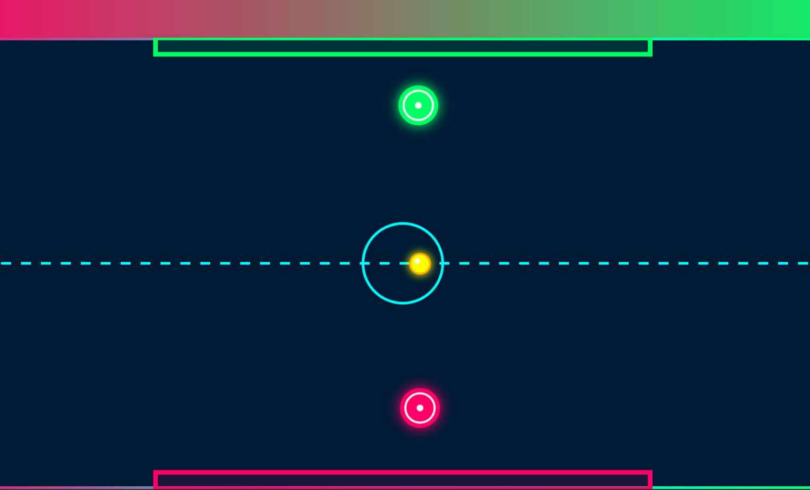
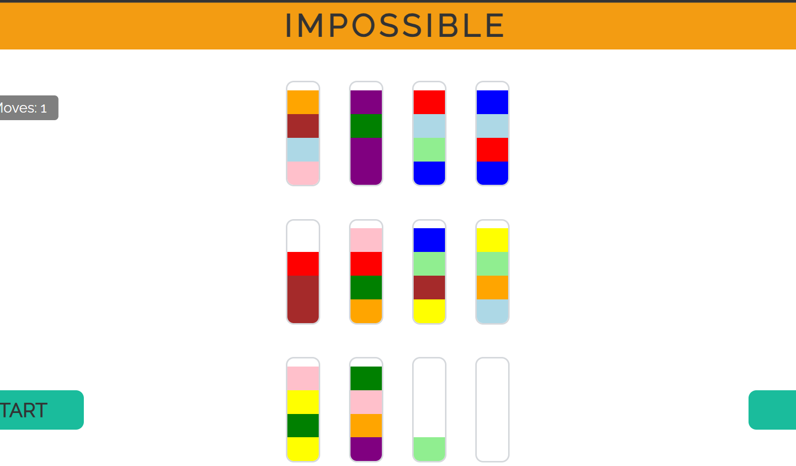
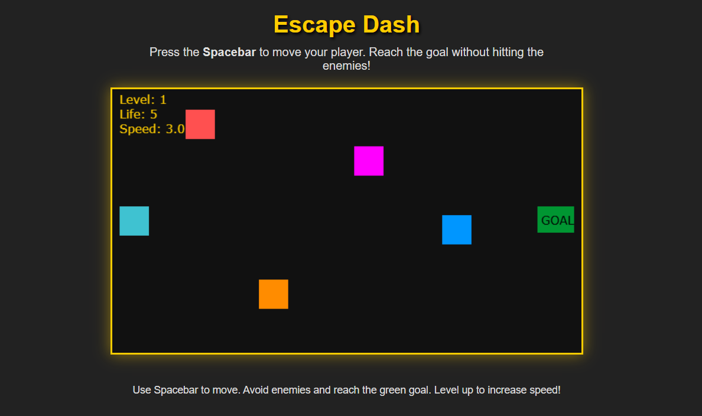
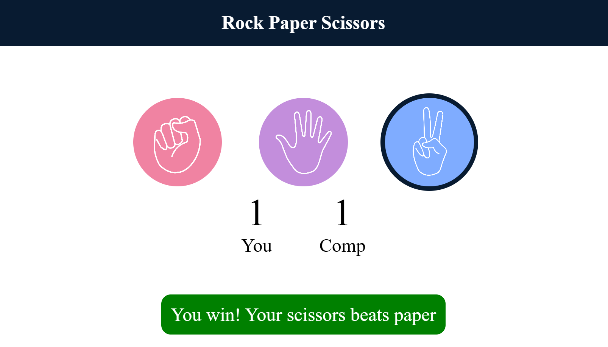
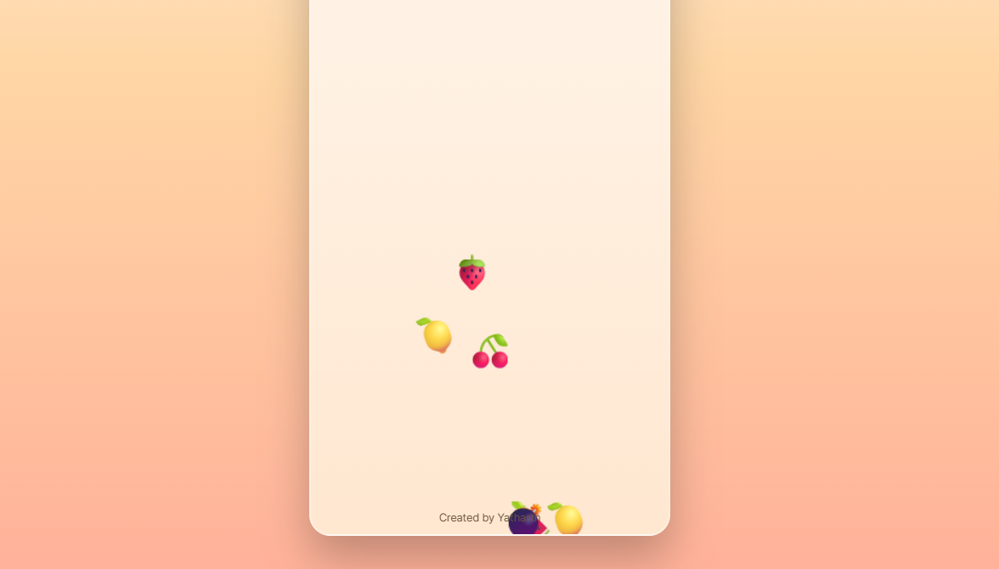
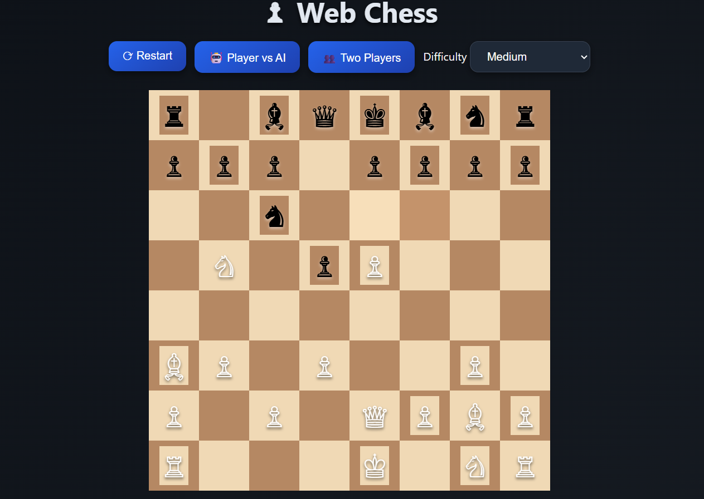
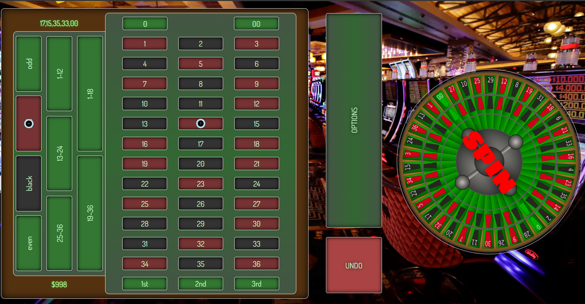
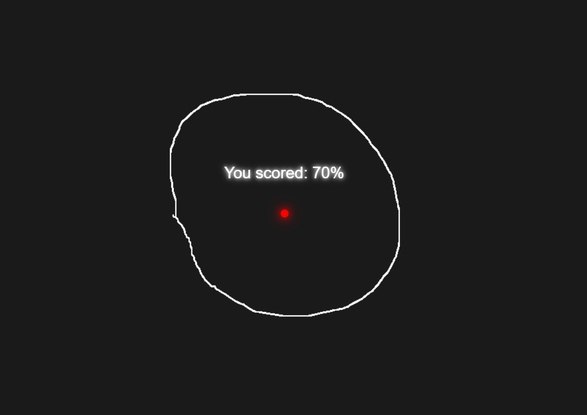

Glow Hockey Game
Developed a fast-paced arcade-style Glow Hockey game featuring smooth
paddle movement, realistic collision detection, score tracking, and
responsive controls. The project required implementing game physics,
object interactions, and real-time user input handling to create an
engaging and competitive gaming experience.

Prismony Test Tube Puzzle Game
Built a challenging color-sorting puzzle game where players must
strategically organize colored liquids into separate test tubes. The
project focuses on logical reasoning, game state management, and
algorithmic problem-solving while providing an intuitive and enjoyable
user experience through interactive gameplay mechanics.

Escape Dash Adventure Game
Designed and developed an action-oriented adventure game where players
navigate through obstacles, avoid hazards, and progress through
increasingly difficult levels. The project incorporates player
movement mechanics, collision handling, score progression, and dynamic
difficulty adjustments to deliver an immersive gaming experience.

Rock Paper Scissors Game
Implemented the classic Rock Paper Scissors game with an interactive
interface, automated computer opponent, score tracking, and real-time
result evaluation. The project demonstrates the use of conditional
logic, randomization techniques, event handling, and user interaction
management in a fun and engaging environment.

Fruit Ninja Inspired Game
Developed an arcade-style slicing game inspired by Fruit Ninja,
featuring randomly generated objects, collision detection, score
management, and responsive gameplay mechanics. The project required
careful implementation of animations, user interactions, and game
logic to create a fast-paced and entertaining experience.

Chess Game
Developed a fully functional Chess game featuring complete implementation
of standard chess rules, legal move validation, turn-based gameplay,
check and checkmate detection, and strategic board management.
The project required handling complex game logic, piece-specific movement
patterns, player interactions, and dynamic board updates.

Roulette Game
Designed and developed an interactive Roulette game inspired by the classic
casino experience. The application includes realistic betting mechanics,
random number generation, outcome evaluation, score tracking, and dynamic
user interactions. Players can place different types of bets and observe
the spinning wheel simulation before results are calculated automatically.

Draw Perfect Circle Challenge
Created an interactive challenge application that evaluates a user's
ability to draw a perfect circle. The system analyzes the accuracy of
the drawn shape and provides performance feedback based on geometric
precision. This project combines graphical rendering, mathematical
calculations, and user interaction techniques.